Adrian Perreault
Project Snapshot
- PBR Rendering
- GLTF model & animation support
- Nearly all systems and file format support is written from scratch (very few external libraries used)
- User Interface in 3D
- (uses ray casting projected on to a flat plane)
- PS4 controller support
- (also supported: Nintendo Joycon, SpaceNavigator 3D Mouse, Maschine MK2, Faderport, midi devices)
- 3D model skinning! (The noodle models bend with their bones)
- (Often regarded as one of the hardest aspects of engine development to get working correctly)
- CSound audio support
- Processed on a separate thread
- Channel-based message passing for audio events and control data
- Editor
- Shown at the bottom: 2.6% of a single CPU core (of 16) used while updating user interface (excellent performance)
- Batched Instance Rendering
- E22's Physics Engine
- A line-by-line re-write from Javascript to Nim of Matter.js
- Scheduler scheduling marble spawns
- Embeded Lua VM for runtime scripting
- Highly responsive physics collision system
- Hot reloading shader workflow
- Iterations of compiled shader 'snapshots' saved in local SQLite database
Project G22
A high-level shader language and complier targeting SPIR-V bytecode
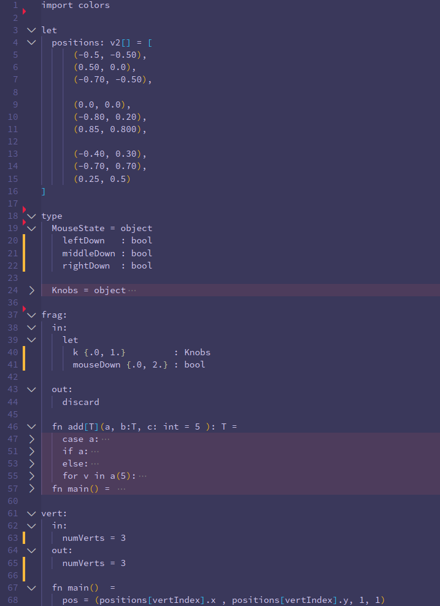
→
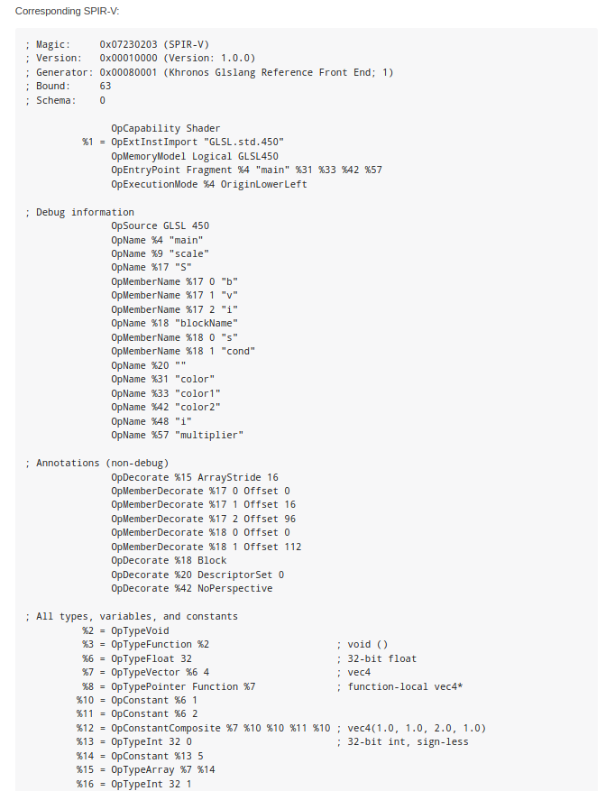
SPIR-V Specification
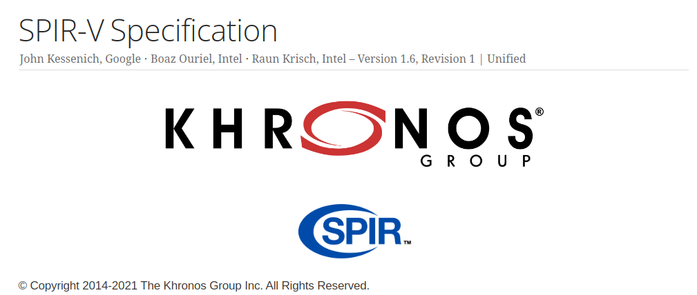
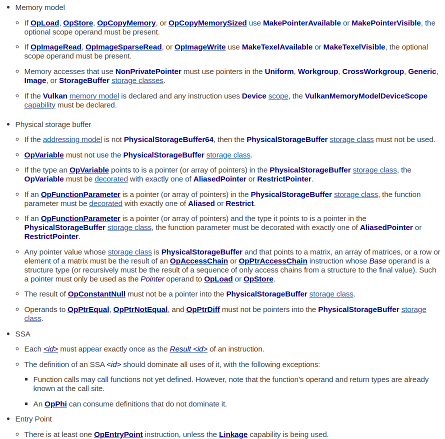
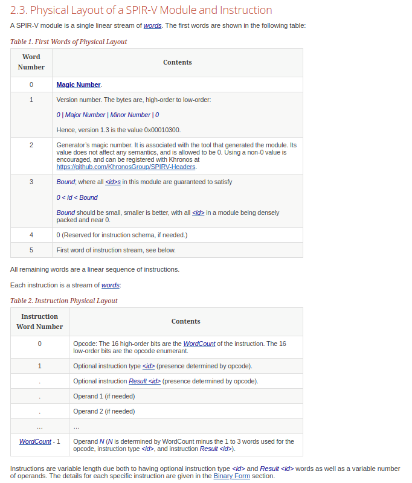
First Parser
- Wrote a PEG grammar for my language, generated a parser via nPeg library
- ...wasn't robust enough
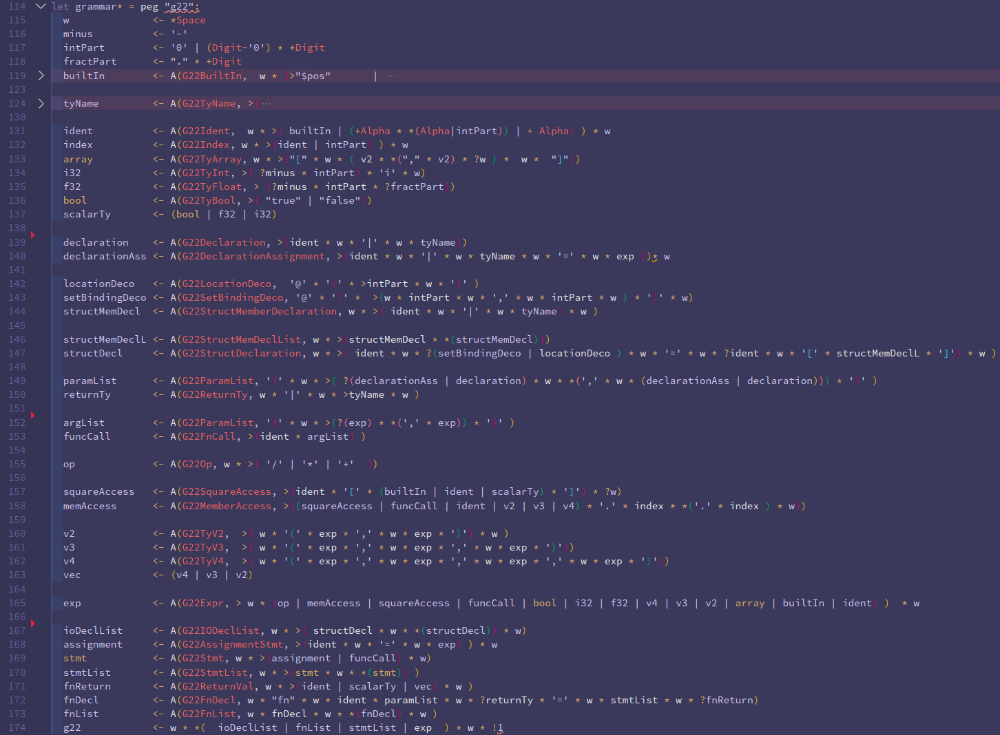
Hacking Nim's Parser
- Already experienced with Nim's AST from macro metaprogramming
- Q: Could I hack Nim's parser from the compiler and adapt it for my language?
- A: Yup.
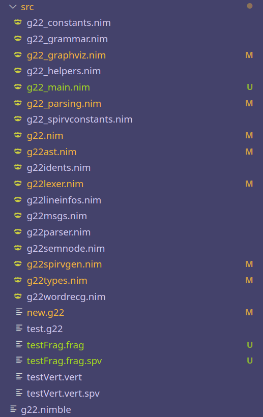
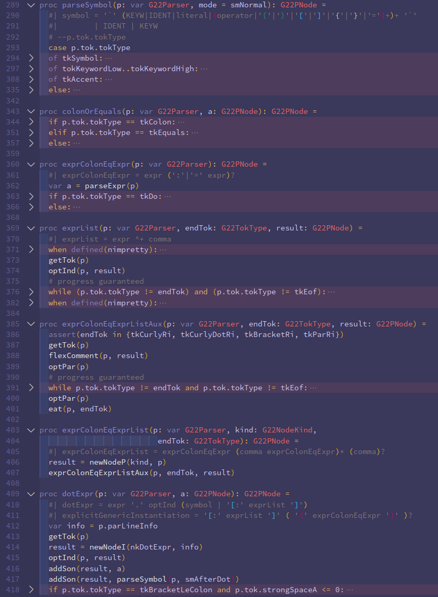
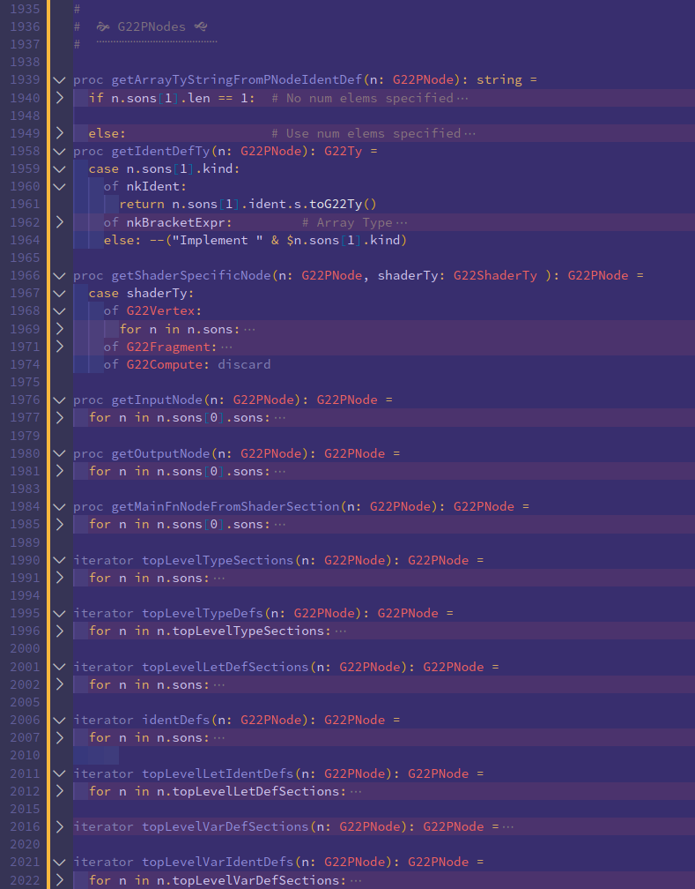
Bytecode Assembler
- With AST node data...
- -> following SPIR-V spec
- -> built bytecode assembler
- -> produced conformant .SPV binary bytecode data
- -> displayed a HelloWorld Triangle in engine (Woot!)
- -> ...scrapped the project and wrote a higher level glsl markup/shader generator - because, pragmatism :)
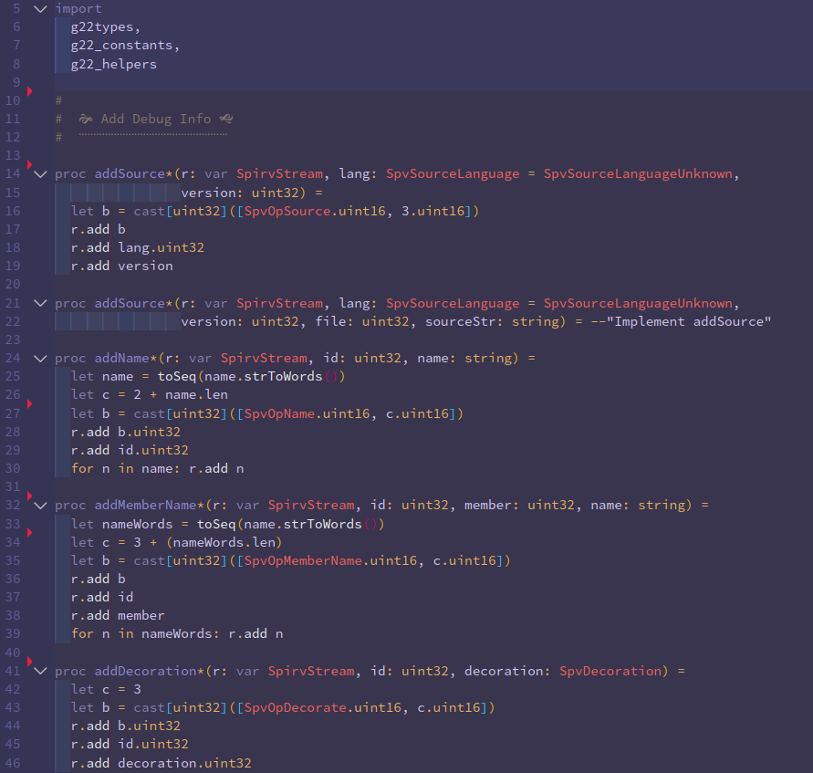
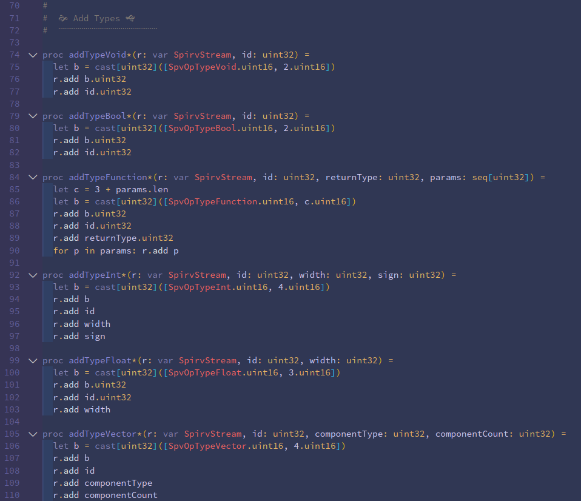
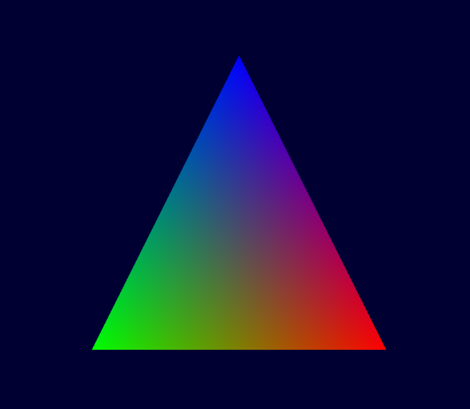